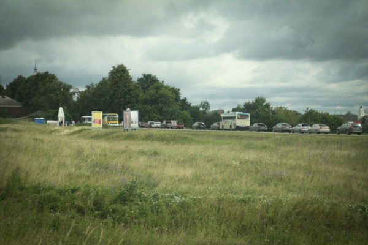
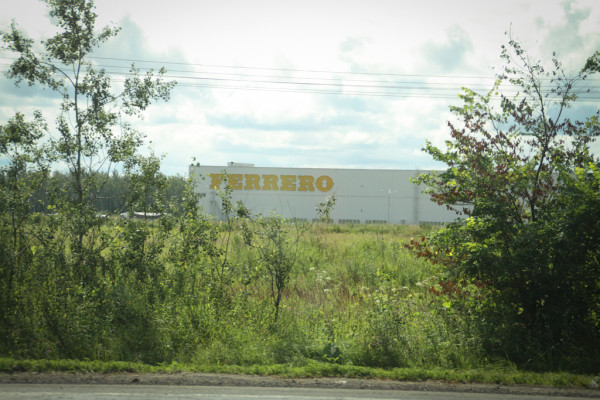
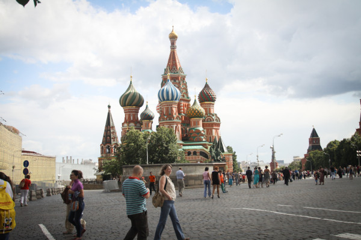

Так вот, на ночлег перед Суздалем мы остановились в мотеле «Печки-Лавочки». Весь мотель стилизован под старину: деревянные двери из нарочито кривообстроганных досок, вся мебель — рай для пожарного инспектора. Я подумал о путях эвакуации и под музыку проходившего внизу дня рождения мы легли спать.
Утром поехали в Суздаль. Мне как-то казалось, что Суздаль и Владимир — города одного порядка, на деле оказалось, что это не так. Владимир — вполне себе такой город уровня Кемерова, то о Суздале наиболее красноречиво говорит тот факт, что подъезжая к нему, мы увидели, что город ЗАКРЫТ.

Дело в том, что в Суздале 21 июля проходил День Огурца.
Огурец для суздальчан — что-то вроде нашего йети — привлекающий деньги туристов символ.
Город пришлось объехать.
В Суздале огромное количество церквей, разной степени готовности к принятию прихожан, город вообще пропитан историей. Ясно, что при слове «Суздаль» мало у кого возникнет ассоциация с чёрной металлургией, но мы были всё же удивлены.

Мы проехали Суздаль насквозь, и взяли курс на Москву.
По дороге увидели родину конфеток Рафаэлло.

Был субботний летний день, и столица встретила нас пробками, к счастью на выезд.
Появились полосы с реверсивным движениям, на которых простой парень из далёкого сибирского села не растерялся.
На обочинах виднелись признаки отсутствия в столице сильной руки. В другом регионе рука сразу бы убрала подобную дурь.
Подражая нашему городу в столице тоже есть выделенные под общественный транспорт полосы.
Несмотря на увеличенный знак, столичные автолюбители на проблемы общественного транспорта кладут руль.
К Москве я отношусь не очень положительно, поэтому из всего разнообразия предлагаемых столицей развлечений мы решили остановиться на Красной площади. Вначале мы решили остановиться на Васильевском спуске, причём буквально, но бдительный сотрудник ГИБДД за вознаграждение указал нам на ошибку и высказал рекомендации.
Решив оставить затею с бесплатной парковкой мы остановились на платной неподалёку от сердца России.
Пошли гулять на площадь и фотаться.

Прогулявшись по магазину-музею ГУМу, вернулись в машину и отправились в сторону Калуги.
На этом знакомство со столицей и закончилось.
По дороге увидели на АЗС вот такой забавный дизлайк. Интересно, как относятся к нему владельцы АЗС, ну и по формату — чушь, конечно.
Короткое резюме: Суздаль стоит того, чтобы в нём побывать, желательно пешком, желательно не торопясь. Путешествовать на машине по Москве — пустая трата нервов.